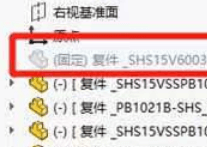
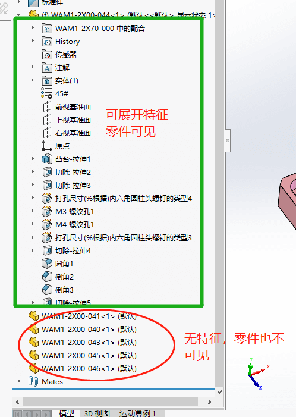

模型异常

解决配合问题
配合错误
MateXpert
您可以使用 MateXpert 识别装配体中的配合问题。 可以详细检查不满意的配合，并确定过定义装配体的配合组。
修复配合问题的技巧
许多过定义及冗余配合问题可通过以下步骤而解决。
配合错误范例
配合的实体 PropertyManager
在配合的实体 PropertyManager 中，您可重新附加悬空的配合实体。
全局替换失败的配合参考
如果用于装配体中的许多位置的某个部件缺少配合参考，则您可同时替换所有实例的缺失参考。
遗失实体弹出式工具栏
当您替换装配体中的零部件时，可在替换配合参考时利用“遗失的实体”弹出式工具栏来导览现有的配合
虚拟零部件丢失
方法Solution S-034052
有一种比较常见的原因是因为文件损坏问题导致内部保存的零部件丢失，
还有一种原因可能是使用了‘打包’功能，建议多做一个备份。
目前有一个可行的方法，是需要客户去确认在C:\Users<username>\AppData\Local\Temp\sw（xxxx）中是否有丢失的复件“零件.sldprt”. 如果有，手动再装配体中解压零件，您应该会得到通知无法加载该零件，是否手动浏览选择，手动浏览到该路径，然后选择。
无法写入错误日志文件，确保磁盘没有写入保护
常见另存stp时出现，
说法1、打开别人发过来的step文件，显示“无法写入错误日志文件”。文件名有特殊符号（ф）导致另存失败；
说法2、是【3Dinterconnect】影响了导入的stp零部件，再次另存时受影响
重建模型错误
Q：由于深度较大，开环轮廓盲孔切割失败
A：切除位置为空导致，需要检查特征应用的范围。（例如：拉伸切除是否使用了“反侧切除”，然后在新位置不能镜像导致）
显示异常
任务窗口不显示


~$文件
出现~$文件并且不能隐藏。
注解光标不显示
工程图注解文字在编辑时，鼠标光标不显示问题。这似乎是SW2022 中其中一个 Microsoft 版本的问题（问题出现于）
方法1：显卡驱动显示问题，经RX和回退驱动得到验证
方法2：可以通过关闭（禁用）集成显卡的方式，恢复光标。
方法3：可以通过【右键注解-在窗口中编辑】来看到光标编辑。
装配体图形显示
透明度100%才透明
透明度不能连续变化，只有不透明（0~99%）和透明（100%）。
1、尝试【RX工具-OpenGL模式】打开文件，排除显卡显示问题；
2、如果1正常检查当前显卡的型号和驱动，尝试验证其他电脑是否显示正常，或尝试修改显卡驱动看是否显示正常
纹理图片黑色
不同版本效果还不一样
异常错误信息
弹窗此副本未通过验证
sw2022 关闭许可证验证错误弹窗(弹窗此副本未通过验证，你可能是盗版受害者)
1 | Windows Registry Editor Version 5.00 |
脚本错误
file://C:/Program%20Files/Solidworks%20Comp/SolidWorks/data/taskpane/common/taskPaneFuncs.js
方法：
重新注册 DDL 解决了该问题 ，RegSvr32 C:\Program Files\SOLIDWORKS Corp\SW2021\SOLIDWORKS\swHTMLControl.dll

为什么会出现错误 包含无效路径
(图)
之所以出现此问题，是因为 *.obj 纹理文件路径与当前路径不匹配。
要解决此问题，请执行以下步骤：
1.在 Windows® 文件资源管理器中，右键单击 *.obj 文件，然后依次选择“打开方式”>“记事本”。
2.在记事本中，选择“编辑”>“替换”。
3.在“查找内容”文本框中，键入或粘贴 *.mtl 文件的路径。此路径一般显示在 *.obj 文件的第一行。
4.在文件资源管理器中，转至 *.mtl 文件的文件夹位置。
5.按下键盘上的“Shift”键，同时右键单击该文件，然后选择“复制为路径”。
6.返回到“替换”对话框，将该路径（不带引号）粘贴到“替换为”文本框中。然后，单击“全部替换”。
如需相关的图形参考，请参阅随附的图片文件。请注意，该路径在文件中出现了多次，您必须在所有实例中替换该路径。
零部件特征显示
FeatueManage识别
FM识别不受支持的实体
性能挂起
右键重命名卡
造成卡死的原因是 SolidWorks2020 与 Windows11 不兼容，把系统换回 Windows10 就 OK 了。SolidWorks 对 Windows 家庭版系统的兼容性也不好！
sldbgproc 占用 100%

异常代码
打开图纸报错
闪退报错，然后我就去看了下host文件加了个PDM服务器IP，后正常
sldrsu:0017g51c
sldappu:0019eacc
操作“显示零部件”崩溃（可复现）
方法：是显示问题，在此SOLIDWORKS官网下载对应的2020版本修补补丁并安装
https://www.solidworks.com/zh-hans/support/hardware-certification/
sldrglu:000b1559
swccu:0001834c
重建崩溃
Mscorlib：0059d884
重建崩溃
vcruntime140.000012de
拔模分析崩溃，软件退出。
方法：出现vcruntime140报错，但是不是最终原因。原因在swatcolorlabel.ocx为注册安装导致。
SOLIDWORKS 崩溃故障排除指南（第 1 部分，共 3 部分） (javelin-tech.com)
sldworks:1000209d8
打开工程图文件发生错误，软件退出。
方法：可以在“出详图”模式下，删除该视图，保存，还原（或轻化）打开即可。就不会有错误
其他
工程图图纸格式找不到，
方法1：【系统选项-文件位置-图纸格式】需要做设置，链接到新制的图纸的文件夹位置
参考：
SOLIDWORKS 崩溃故障排除指南（第 1 部分，共 3 部分） (javelin-tech.com)
疑似还原崩溃，但可能不是最终原因，需要问题原档或dmp检查。